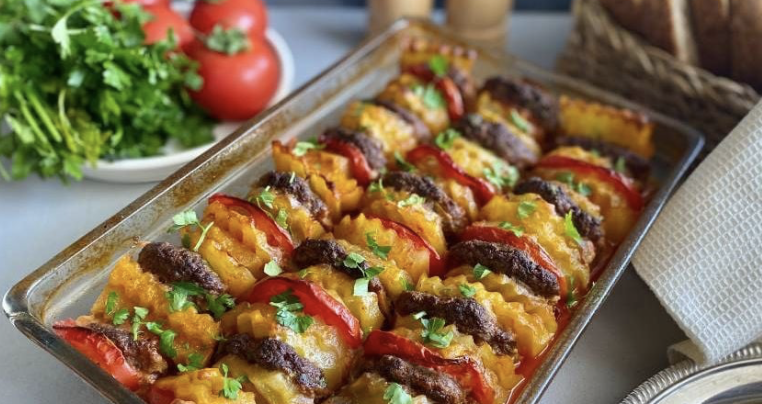
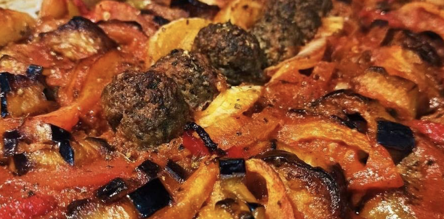

fırında köfte patates TARİFİ



Fırında Köfte Patates Tarifi İçin Malzemeler
- 2-3 adet patates
- 2-3 adet yeşil biber
- 2 adet domates
- Sıvı yağ
- 1.5 yemek kaşığı domates salçası
köftesi için:
- Yarım kg kıyma
- 1 adet kuru soğan
- 2-3 diş sarımsak
- 1 adet yumurta
- Yarım su bardağı kadar ufalanmış bayat ekmek içi veya galeta unu
- Tuz
- Karabiber
- Pul biber
yapılışı:
- Öncelikle köfteler hazırlanır. Bunun için soğan bir kaç parçaya ayrılarak sarımsaklar ve yumurta ile mutfak robotundan geçirilir. İncecik hale gelen soğanlar ve sarımsaklar kıymaya ilave edilir.
- Bayat ekmek içi, baharatlar ve tuzu da eklenerek köfte harcı yoğurulur. Malzemeler iyice özdeşleşince ufak parçalar koparılarak köfteler şekillendirilir.
- Patates ve köfteler kızartılır. Patatesler dilimlenir. Tavada sıvı yağ kızdırılarak köfteler ve patatesler hafifçe kızartılır. (Patateslerin çok fazla pişmesine gerek yok).
- Köfte ve patatesler fırın kabına alınarak pişirilir. Bütün köfte ve patatesler kızartılınca fırın kabına alınırlar ve üzerine salçalı sıcak su gezdirilir.
- Domates dilimleri ve biberlerle süslenen fırın tepsisi fırına sürülür. Domatesler pişinceye dek yaklaşık 25 dk kadar düşük ısıda pişirilir. Afiyet olsun…